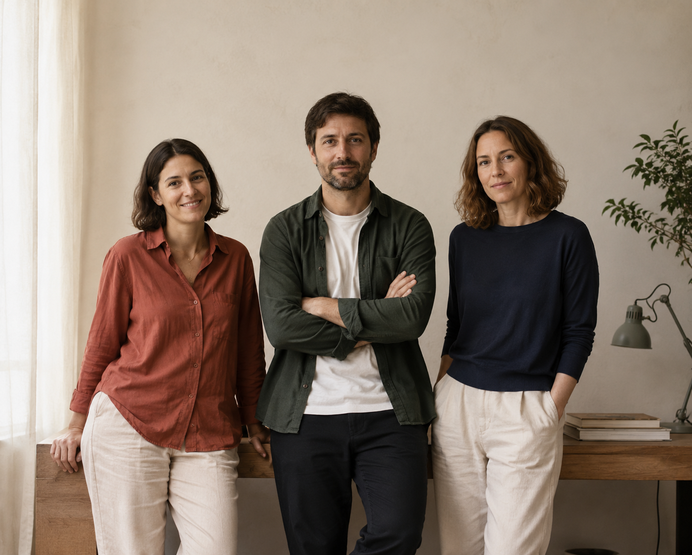

Saturación por popularidad
Los rankings generan un efecto acumulativo: cuanto más visible es un lugar, más se visita y más se satura. Los barrios pierden su identidad.
App para residentes de Madrid
No como decorado.
Redescubre tu ciudad desde el barrio, la vida cotidiana y la afinidad.
Sin rankings turísticos, sin viralidad, sin ruido.
Usuarios piloto
Barrios
Rankings

El problema
Las apps de recomendación actuales muestran Madrid desde lógicas turísticas, invisibilizando la vida cotidiana de quienes la habitan.

Los rankings generan un efecto acumulativo: cuanto más visible es un lugar, más se visita y más se satura. Los barrios pierden su identidad.
Los comercios locales y ubicaciones de barrio quedan sepultados bajo recomendaciones virales y rutas turísticas estándar.
Las plataformas reorganizan cómo se percibe, se recorre y se consume la ciudad, reduciendo su complejidad a consumo rápido.
Madrid Habitada existe para devolver al residente una relación más propia, próxima y cotidiana con la ciudad.

La propuesta
Madrid Habitada ayuda a redescubrir la ciudad desde barrios, usos reales y experiencias no turistificadas.
Recomendaciones por barrio habitual, contexto de uso y afinidad personal. Sin rankings, sin modas.
Cada lugar explica su papel en la vida del barrio: qué hay, por qué encaja contigo y qué puedes hacer.
Mañana, tarde o noche. La app propone lugares según el momento con baja carga cognitiva.
Tu memoria personal de la ciudad. Sin rankings sociales ni obligación de publicar o compartir.
Objetivo SMART
Validar con una muestra mínima de 40 usuarios residentes en Madrid si la experiencia de exploración permite que al menos el 60 % encuentre y guarde un lugar afín o inicie una ruta cotidiana en menos de 3 minutos, con valoración media mínima de 4/5 en claridad, utilidad y afinidad percibida.
semanas
Periodo de validación del prototipo.
minutos
Tiempo máximo para completar la acción.
valoración
Claridad, utilidad y afinidad percibida.
conversión
Guardar un lugar o iniciar una ruta.
usuarios
Muestra mínima de residentes.
Para quién
Madrid Habitada se adapta a distintas relaciones con la ciudad, siempre desde la vida cotidiana y la proximidad.

Residente arraigada
36 años · Administrativa
Carabanchel
Necesita proteger sus rutinas y espacios de confianza frente a la masificación.
«Quiero seguir yendo a mis sitios sin que se llenen de gente que los descubrió en Instagram.»
Residente largo plazo
42 años · Informático
Chamberí
Busca descubrir Madrid sin depender de rankings ni recomendaciones masivas.
«Llevo 15 años aquí y aún quiero descubrir sin que me lo dé un algoritmo de turistas.»
Residente reciente
29 años · Diseñadora
Aluche
Necesita orientación para construir pertenencia de forma progresiva.
«Me mudé hace 6 meses y no quiero que mi única referencia sean las rutas de siempre.»
Arquitectura de la información
El diseño no busca retener atención; busca resolver una consulta y devolver al usuario a la ciudad. La información se organiza en tres niveles.

Embudo de conversión · RACE
Cada fase del producto está diseñada para reducir fricción y generar una relación real. El modelo RACE se interpreta como indicador de valor experiencial.
Base estratégica y definición de audiencia.
Atraer residentes, no turistas.
Exploración útil sin fricciones.
Guardar un lugar o iniciar una ruta.
Retorno y vínculo emocional.
Empieza hoy
Únete a los primeros residentes que redescubren su ciudad desde la proximidad, sin ruido y sin rankings.
Sin publicidad · Sin rankings turísticos · Tecnología discreta
Identidad visual
Fachadas, ladrillo, persianas, portales, mercados, bares, calles secundarias y comercio local. Criterio fotográfico documental, a nivel de calle, con luz natural.

Bar de barrio
Mercado de barrio

Kiosco de prensa
Fachadas, ladrillo, persianas, portales, mercados, bares, calles secundarias y comercio local.
Documental · nivel de calle · luz natural · escenas no monumentales.
Plus Jakarta Sans — Clara, funcional y amable.
Granate ladrillo
#8A3A32
Terracota suave
#C46A4A
Azul sombra
#2F3A45
Verde persiana
#5E6049
Crema fachada
#F3E6D3
Gris piedra
#323232
Lucide Icons · Coherente con la discreción del sistema.
Lugar
Guardado
Mi barrio
Momento
Ruta
Explorar
Comercio
Residentes
Propuesta de growth
El reto: Crecer desde cero sin traicionar los valores del producto. El mayor riesgo es parecer «otra app de planes».
Idea clave
El crecimiento de Madrid Habitada no se mide en descargas ni en tiempo de pantalla, sino en conexiones reales con la ciudad. La tecnología no retiene la atención: resuelve una consulta y devuelve a la persona a la calle.
Métrica norte (North Star)
Definición
Usuarios que cada semana guardan un lugar afín o inician una ruta cotidiana con afinidad percibida de 4/5 o más. Mide la conexión real (no el tráfico) y solo cuenta acciones que respetan los guardrails del producto.
Por qué: sube solo cuando la recomendación se percibe como propia; no se infla con vanity metrics como descargas o tiempo en pantalla.
Objetivos de validación (SMART)
01 · Comprensión y utilidad
Que los residentes encuentren y guarden un lugar afín o inicien una ruta cotidiana.
02 · Calidad, no volumen
Que la recomendación se perciba como relevante y clara.
03 · Retorno por valor
Que parte de la muestra vuelva y realice una 2ª acción de conexión.
El embudo que mide conexión
| Fase · AARRR | Métrica de apoyo | Criterio de éxito |
|---|---|---|
| Alcanzar · Adquisición | Visitas cualificadas y % que pide acceso a la prueba. | CTR a registro 8%+ · coste ~0 |
| Actuar · Activación | % que llega a su 1ª recomendación y tiempo hasta ella. | 60%+ activados · menos de 3 min |
| Convertir · Conversión | % que guarda un lugar o inicia una ruta = conexión. | 60%+ · afinidad 4/5+ |
| Involucrar · Retención | Retención D7/D30 y nº de acciones por usuario. | D7 25%+ · 1,5+ acciones/usuario |
| Involucrar · Recomendación | Invitaciones 1 a 1 y % que se convierte en residente activo. | 20%+ invita · conversión 25%+ |
| Planificar · Monetización | Disposición a apoyar el modelo (medida cualitativa). | Sostenibilidad sin romper la UX |
Hipótesis clave (si… entonces…)
Si mostramos «afinidad, no rankings» en el primer contacto, sube el registro cualificado.
Si la entrada es progresiva y sin registro inicial, más usuarios llegan a su 1ª recomendación.
Si cada ficha explica por qué el lugar encaja, sube el porcentaje de guardado.
Si se puede guardar sin registro previo (diferido), aumenta la conversión núcleo.
Si la recomendación semanal es discreta (máx. 1/sem.), mejora la retención D7.
Si habilitamos invitación 1 a 1 y colecciones privadas, crece la adquisición vecinal.
Backlog priorizado con ICE
| Exp. | Experimento | Palanca | ICE |
|---|---|---|---|
| B3 | Guardar sin registro previo | Conversión | 8.3 |
| B1 | Onboarding progresivo sin registro | Activación | 8.0 |
| A1 | Landing con mensaje diferencial (A/B) | Adquisición | 8.0 |
| B2 | Fichas que explican la afinidad | Conversión | 7.7 |
| C1 | Recomendación semanal discreta | Retención | 7.3 |
| A2 | Invitación 1 a 1 + colecciones | Recomendación | 6.3 |
| D1 | Test de sostenibilidad | Monetización | 5.7 |
Los cinco prioritarios (B3, B1, A1, B2, C1) concentran el esfuerzo en el corazón del embudo —activación, conversión y retención— antes de invertir en recomendación y monetización.
Plan de ejecución
Instrumentar eventos, definir muestra y guardrails; captación cualificada.
Reducir la fricción de entrada y clarificar la afinidad.
Análisis de la conversión de conexión y decisión escalar/iterar.
Recomendación semanal discreta y memoria personal.
Prescripción vecinal, señal de apoyo y documentación de aprendizajes.
Cómo se controla
Cadencia: panel diario de guardrails · growth review semanal (RCS + embudo) · análisis de cohortes D7/D30 mensual. Cada experimento gana solo si mejora su métrica y no empeora los guardrails.
Guardrails de producto: afinidad 4/5+ · máx. 1 comunicación/semana · sin ranking turístico · menos de 60 s a la 1ª recomendación.
Madrid se habita, no se consume.
Un plan de crecimiento sostenible: no persigue tráfico, sino conexión.